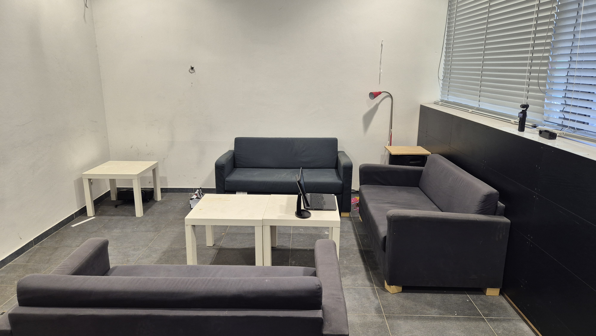
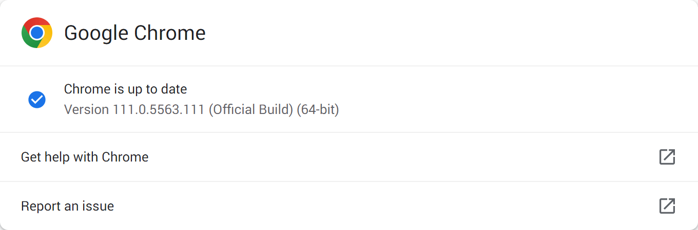

Thinking Aloud Test Report
Human-Computer Interaction SS 2026
Group G1-09
Sven Jansen
Luca Riedler
Dawid Chmal
Fabian Mehedincu
Thinking Aloud Test of the Web Site
alza.at
Report of 20th May 2026
1 Executive Summary
{Executive Summary of the main results from the usabilty test aimed at higher management (between 300 and 500 words). In paragraphs, not bulleted lists.}
{Your client's manager will not read the whole report, but only the executive summary, and wants to know how the test was done and what the main findings were.}
{The description of procedure, methodology, and setup should take up no more than 25% of the executive summary. Most of the executive summary should summarise the main findings.}
2 Introduction
{Short description of the web site to be tested.}
alza.at is an Austrian online electronics retailer offering a wide range of products including laptops, smartphones, PC components, household appliances, and office supplies. It is one of the largest electronics e-commerce platforms in Central Europe.
{State whether the tests were run in English or German. Adapt my text below accordingly.}
The web site is available in both German and English. The English version was tested with English-speaking test users.
3 Test Procedure
3.1 Test Methodology
{Describe what a TA Test is and how it is done. Write between 300 and 500 of your own words. Replace my sample text below with your own.}
A thinking aloud test is a usability evaluation method in which a test participant is asked to verbalise their thoughts, feelings, and actions while interacting with a system or web site. Rather than simply observing what a user does, the thinking aloud technique allows the test team to gain insight into the reasoning behind user behaviour, revealing misconceptions, confusion, and unexpected mental models that would otherwise remain hidden. The method was originally developed in cognitive psychology as a means of studying problem-solving processes and was later adapted for use in human-computer interaction research by Ericsson and Simon [Eri1993]. A comprehensive overview of the thinking aloud method in the context of usability testing can be found in Keith Andrews' course notes [And2023].
During a thinking aloud test, one or more facilitators guide the session while the participant works through a series of predefined tasks. The facilitator's role is to keep the participant talking and to intervene as little as possible, so as not to influence the outcome. Participants are encouraged to speak freely about what they are looking for, what they expect to happen when they click something, and what surprises or confuses them. This continuous stream of commentary provides rich qualitative data that can be used to identify usability problems with far greater precision than quantitative methods alone allow. As described by Barnum [Bar2020], even a small number of test participants (typically five) is sufficient to uncover the majority of usability issues in a given interface.
Sessions are recorded using both a screen capture tool and an external camera pointed at the participant's face, so that the test team can later review the recordings to identify and rate findings. Each finding is classified either as a problem or a positive, and rated for severity or positivity on a scale from 0 to 4. Problems are then ranked and the most critical ones are described in detail, along with recommendations for how the interface could be improved. The thinking aloud method is particularly well suited to evaluating e-commerce web sites, where navigation, product discovery, and checkout flows are critical to user satisfaction, as discussed by Dumas and Redish [Dum1999].
3.2 User Profiles
{Describe the kinds of user the site is trying to attract.}
{Group these users into categories according to their characteristics.}
{Describe the goals and typical tasks for each of these user groups.}
{Describe the user group you actually tested, i.e. the one you were notified to use.}
alza.at is a large electronics e-commerce platform targeting buyers of electronics goods across a broad range of ages and technical backgrounds. The site offers products ranging from consumer electronics and mobile devices to PC components, household appliances, and office supplies. Its user base can be grouped into three broad categories.
Casual consumers are everyday shoppers looking to purchase ready-to-use electronics such as smartphones, laptops, headphones, or household appliances. Their primary goals are to find a product that meets their needs at a good price, read reviews, and complete a purchase quickly. Typical tasks include browsing categories, filtering by price or brand, comparing a small number of products, and checking out.
Tech enthusiasts and PC builders are more experienced users who come to the site to research and purchase specific hardware components such as graphics cards, processors, or RAM. They rely heavily on detailed technical specifications, compatibility information, and comparison tools. Typical tasks include searching for specific component models, comparing specifications across multiple products, and using the PC configurator to assemble a custom build.
Occasional buyers are users who shop online infrequently and are less familiar with the site. They may struggle with navigation, search, and the checkout process, and are more likely to encounter usability issues. Typical tasks include finding a specific product by browsing or searching, and registering an account to complete a purchase.
For this study, the user group specified for testing was buyers of electronics goods. Our five test users were students aged 19 to 29 who were experienced with computers and the internet, but shopped online only occasionaly (a few times a year or less). None had previously used alza.at, and most were familiar only with larger platforms such as Amazon and Mediamarkt. This places them broadly in the casual consumer and occasional buyer categories.
3.3 Test Users
{Collect all the data from the background questionnaires, including your domain-specific questions, and enter it into the table below. Use the fictitious first name aliases of your test users.}
Table 1 gives an overview of the test users who participated in the study. First name aliases are used throughout this report to protect their identity.
| Test User | TP1 (Pilot) | TP2 | TP3 | TP4 | TP5 |
|---|---|---|---|---|---|
| Alias | “Emma” | “Lily” | “Chloe” | “Jack” | “Ethan” |
| Date of Test | 7th May 2026 | 8th May 2026 | 8th May 2026 | 8th May 2026 | 8th May 2026 |
| Time of Test | 18:25 | 16:00 | 17:30 | 18:30 | 19:30 |
| General Information | |||||
| Gender | woman | woman | woman | man | man |
| Age | 19 | 24 | 19 | 29 | 24 |
| Occupation | Student | Student | Student | Student | Student |
| Education | |||||
| Highest Level | A Levels | Bachelor | Vocational Training | Vocational Training | Bachelor |
| Area of Study | Musicology | Structural Engineering | Cooking | Embedded Software | Industrial Engineering |
| Personal Computer use | |||||
| Most used PC | Microsoft Windows | Microsoft Windows | Microsoft Windows & Apple Macintosh | Unix | Apple Macintosh |
| How long been using a PC | 5 years | 10 years | 8 years | 15 years | 15 years |
| Hours per week | 7 | 30-40 | 15-20 | 55 | 56 |
| Tablet use | |||||
| Most used tablet | Apple | Apple | Android | N/A | N/A |
| How long been using a tablet | 2 years | 5 years | 4 years | N/A | N/A |
| Hours per week | 15 | 10-20 | 30 | N/A | N/A |
| Smartphone use | |||||
| Most used smartphone | Android | Apple | Apple | Android | Apple |
| How long been using a smartphone | 10 years | 12 years | 12 years | 14 | 12 |
| Hours per week | 28 | 25 | 60 | 21 | 14 |
| Web use | |||||
| Most used surfing device | Desktop & Laptop & Tablet & Smartphone | Laptop | Smartphone | Laptop | Laptop |
| Kind of internet connection | Cable & 5G | Cable | 5G | Cable | Wifi (5G) |
| Which web browser | Chrome | Chrome | Chrome | Firefox | Safari |
| Hours per week | 4 | 15 | 20 | 30 | 28 |
| Domain-Specific Questions | |||||
| How often online shopping | A few times a year | A few times a year | A few times a year | A few times a year | Never |
| Previously visited/purchased e-shops | Amazon & Mediamarkt | Amazon & Mediamarkt & Refurbed | Amazon & Mediamarkt | Amazon & Alibaba | Amazon |
| When buying online, most important factors | Price & Product specifications & Customer reviews | Price & Product specifications | Price & Return policy | Price & Customer reviews & Reliability | Price & Product specifications & Customer reviews |
| Experience with Usability Tests | |||||
| As Test Person | No | No | No | No | No |
| In Test Team | No | No | No | No | No |
| Type of Test | N/A | N/A | N/A | N/A | N/A |
3.4 Test Environment
{Include one or two photos of the room and test environment (JPEG). Anonymise anyone who is identifiable in the photos by pixelating or blurring their faces.}
The test room is shown in Figure 1.

The environment used for the thinking aloud tests is shown in Table 2.
{Fill out the table with the exact details used at the time of the
TA tests. Measure the download speed of your internet connection (in
Austria, use
netztest.at).}
{Note: the recording resolution is the resolution of the actual recorded video of your browser window. For example, be aware that Windows Display Scaling can change the recording resolution, OBS Studio can scale the recording, the browser window may not be maximised to full screen, etc.}
{Enter the name, version, and platform of the video editing software and any transcoding software you used.}
| Device | Dell Latitude 5500, 16gb RAM |
|---|---|
| OS and Version | Windows 11 Pro 64-bit v25H2 Build 26200.8246 |
| Screen Size | 15.6″ |
| Screen Resolution | 1920×1080 |
| Web Browser and Version | Chrome 148.0.7778.97 |
| Internet Connection | VCGraz Internet |
| Download Speed | 9 mbps |
| Screen Recording Software | OBS Studio 32.1.2 |
| Recording Resolution | 1920×1080 |
| Video Editing Software | DaVinci Resolve 20.3.2 Build 9 |
| Video Transcoding Software | was not required |
{Include a screenshot (PNG) of the browser About window to document the exact browser version used in the test.}
The exact web browser version used for the tests is shown in Figure 2.

{Explain that ad blockers were not used (uninstalled, disabled).}
No ad blocker was used during the tests. The browser was set up with all extensions disabled to ensure a clean and consistent testing environment for all five test users.
{Explain that use of cookies was left up to each test user.}
The handling of cookies was left to each individual test user. When the cookie consent banner appeared on alza.at, the user was free to accept, reject, or customise the cookie settings according to their own preference.
{Describe the external video equipment (tripod, video camera, microphone, mirror) which was used to record the entire test.}
The entire test session was recorded with an external video camera. A DJI Osmo Pocket 3 was used, placed on its own integrated stand on a windowsill located directly behind the test user, which happened to be at an ideal height for over-the-shoulder framing. As a result, no separate tripod was required: the camera remained stable and stationary throughout each session, capturing the screen, keyboard, and the user's face (reflected in a mirror placed next to the monitor) in a single fixed frame. The camera's built-in microphone was used to capture audio rather than a dedicated external microphone; audio levels were checked before each session to ensure that the test user's voice was clearly audibile.
3.5 Training
{Describe any interface training given to each user. For example, a special input device, window manager, or software.}
No interface training was given. The test was conducted on a standard PC with a mouse and keyboard and an off-the-shelf web browser, all of which the test users were already familiar with from everyday use. No special input devices, window managers, or unfamiliar software were involved.
{Describe any training on thinking aloud given to each user. How did the facilitator demonstrate the thinking aloud technique? Did the user practice it?}
To introduce the thinking aloud technique, each test user was shown a
short demonstration video clip
(ta-demo-keith.mp4) provided in the course materials,
in which a previous test user gives detailed running commentary while
interacting with a diffrent web site. After the video, the
facilitator briefly reminded the user that they should speak their
thoughts aloud throughout the session, describing what they were
looking for, what they expected to happen, and any reactions to what
they saw. No separate practice round was held; instead, Task 1
(First Impressions) served as a gentle warm-up, during which users
became accustomed to verbalising their thoughts before moving on to
the more demanding tasks.
3.6 Tasks
{Enter the tasks which were actually used, i.e. the ones you were notified to use, plus Task 3 of your own.}
{If you tested in German, list the tasks in German and provide English translations.}
The internal task list used by the test team is shown in Table 3.
| Task No. | Description | Short Title | Prerequisites | Completion Criteria | Max. Time | Possible Solution Path |
|---|---|---|---|---|---|---|
| 1 |
Please go to the web site:
and spend a few minutes looking around the site. |
First Impressions |
Browser is open at
|
The user indicates that they have finished looking around. |
3 minutes. | google.com → alza.at |
|
After they have looked around, ask the user:
|
||||||
| 2 | Find an Apple laptop with 128gb of RAM. What are its maximum battery life and battery capacity. | Specifications filter | User finds the laptop section. | The user has found an Apple laptop with 128gb of Ram and knows the battery life and capacity. | 5 minutes. | Homepage → Laptop section → RAM filter set to 128GB → Specifications for battery information |
| 3 | Compare the RX 9060 XT (graphics card) products. Find one variant of that product that has the lowest recommended power source. | Comparison tool | User finds one RX 9060 XT. | The user found the RX 9060 XT with the lowest recommend wattage. | 7 minutes. | Homepage → Graphics cards → RX 9060 XT → All parameters filter → Consumption → Recommended power sources lowest wattage |
| 4 | Build your own PC with the configurator. Add it to the shopping cart. | PC Configurator | User finds the PC configurator. | The user adds a pc with all components to the shopping cart. | 7 minutes. | Homepage → PC component product page → PC configurator → Pick one of each component → Add to shopping cart |
| 5 | Create an account on the web site using the credentials provided. Go to the shopping cart and check out. Stop before making any payment. | Registration & Checkout | User has an item in the shopping cart. | When creating an account the guest shopping cart gets preserved and the user is at the checkout. | 12 minutes. | Homepage → Sign in → New registration → Enter credentials → Continue → Captcha → Login page → Enter credentials → Homepage → Shopping cart → Select a delivery method → Choose payment type |
The actual task slips given to users during the test are included in Appendix A.5.
3.7 Interview Questions
Each user was interviewed immediately after the final task using the interview script given in Appendix A.6. Summaries of the interviews can be found in Section 4.7.
3.8 Feedback Questionnaire
After the interview, the user was asked to fill out the feedback questionnaire given in Appendix A.7. The feedback questionnaire was given on paper. An overview of the results can be seen in Section 4.8.
3.9 Data Collection
{Explain that demographic, behavioural, and attitudinal data collected during the study are associated with a TPid and first name alias. Test users are only referred to by these in this report.}
All demographic, behavioural, and attitudinal data collected from the
test users during the study (such as background questionnaire
responses, task completion data, observed findings, interview answers,
and feedback questionnaire responses) are associated only with a Test
Person ID (TPid) of the form
HCI-SS2026-G1-09-TPn and a fictitious first name alias.
Throughout this report, test users are referred to exclusively by these
TPids and aliases. No real names appear anywhere in the report.
{Explain that personal data (real name, signed consent form, and the full video recordings) collected from the test persons are kept separately and will be deleted after one year.}
Personal data that could be used to identify a test user, namely their real name, the signed consent form, the mapping of real names to aliases, and the full-length session and external video recordings, are stored separately from this report on a USB stick handed in only to the course staff. None of this material is uploaded with the submission or published in any form. All such personal data will be deleted one year after the test date, includng any backups.
{Explain that any faces in the video clips used to illustrate findings in the report have been blurred or pixelated. Explain how this was done (which tool(s), etc.).}
The short video clips included in this report to illustrate findings
were extracted from the full session capture recordings. In each clip,
the webcam overlay showing the test user's face was made unidentifiable
by applying a strong blur to that region of the frame. Different team
members used different tools for this step: some clips were processed
with ffmpeg using the boxblur filter applied to the
webcam region, while other clips were processed using video editing
software to achieve an equivalent result. Audio was left unmodified.
4 Results
4.1 Task Completion
A summary of how many users completed each task and whether any assistance was given is shown in Table 4. Task completion here is a binary measure, where 0 indicates failure and 1 indicates success.
{Indicate which users completed which tasks and whether any assistance was given.}
| Task 1 | Task 2 | Task 3 | Task 4 | Task 5 | |
|---|---|---|---|---|---|
| TP1 | 1 | 1 | 1 | 1 | 1 |
| TP2 | 1 | 0 | 1 | 0 | 1 |
| TP3 | 1 | 0 | 0 | 0 | 1 |
| TP4 | 1 | 1 | 1 | 1 | 1 |
| TP5 | 1 | 1 | 0 | 1 | 1 |
| Total | 5 | 3 | 4 | 5 | 5 |
| % | 100 | 60 | 80 | 100 | 100 |
4.2 First Impressions
Tables 5a, 5b, and 5c show a summary of the responses of the test users to the questions asked after the first task.
{Summarise in English the responses of the test users to the three questions asked after the first task.}
| TP1 | A website aimed at students and families with children. |
|---|---|
| TP2 | For people who want to buy technology. |
| TP3 | "A website where you can buy many different things, from online shops." |
| TP4 | A website for an electronics Store. |
| TP5 | “Alza corporation, I would suppose.” |
| TP1 | Mostly intended for people looking to buy electronics, especially students. |
|---|---|
| TP2 | For all people, I did not recognize if they have a targeted user group. |
| TP3 | "I would say for everyone who is over the age of 18 years old." |
| TP4 | A broad population, customers who know what they want, but not exactly which model yet. |
| TP5 | “For the customers, I guess; for anyone wanting to buy anything ranging from electronic products to Lego. Maybe I belong to this group, it sells computers, phones and gaming stuff, I guess more technically intrigued people.” |
| TP1 | Different kinds of products such as TVs, gaming equipment and household supplies. Especially things useful when moving out for the first time. |
|---|---|
| TP2 | Technology and legal stuff. |
| TP3 | "From electronics to toys to home goods, pretty much everything." |
| TP4 | "A lot of discounts, ... all kinds of general electronics." |
| TP5 | “Anything from computers to Legos: computers, household appliances, a lot of electronic stuff, and also some toys, I guess, from what I saw.” |
{Never invent content. If you forgot to ask about the first impressions, say so.}
4.3 Top Three Positive Findings
The three most positive findings according to their average (mean) positivity ratings are described in more detail below. The positivity rating scheme used to rank positive findings is shown in Table 6.
| Positivity | Meaning |
|---|---|
| 4 | Extremely Positive |
| 3 | Major Positive |
| 2 | Minor Positive |
| 1 | Cosmetic Positive |
| 0 | Not a Positive |
{Describe the top three positive findings which emerged during the test, in descending order of mean positivity (most positive first).}
P01. PC Builder Guides User Through Build Steps
| Title: | PC Builder Guides User Through Build Steps |
|---|---|
| Description: | The PC Builder tool prompts the user to select components in a logical order and suggests compatible parts at each step. The user completed the full build quickly and smoothly once they had found the configurator. |
| Video Clip(s): | p01-tp4-pc-builder-components.mp4, p01-tp5-pc-builder-guides-steps.mp4 |
| Timestamp(s): | TP4 00:15:50, TP5 00:14:51 |
| Location (How Reproducible?): | PC Builder, whenever a user configures a PC |
| Mean Positivity: | 3.00 |
{At least one video clip from every user who experienced a finding should be listed in the mini-table for that finding, each linked to the corresponding video clip. List the corresponding timestamp(s), which refer to elapsed time from the start of the corresponding test user's full session capture video.}
{Choose the best video clip from those available for the finding to embed as a figure.}
{Include at least one paragraph of descriptive text explaining the finding.}
Both TP4 and TP5 were guided through the PC build by the configurator in a logical, step-by-step manner. The tool prompted them for each component in turn and only offered parts compatible with the previous selections. As a result, both users were able to assemble a complete build quickly and confidently once they had located the configurator, as can be seen in Figure 3. TP5 explicitly remarked that the guided flow made the otherwise daunting task of building a PC feel approachable.
P02. Search Filters Are Well Designed
| Title: | Search filters are well designed and work smoothly |
|---|---|
| Description: | The search filter of the website is really neat and even has some more in depth search filters like the minimum recommended power source of a product. |
| Video Clip(s): | p02-tp3-good-filters.mp4 |
| Timestamp(s): | TP3 00:07:25 |
| Location (How Reproducible?): | Homepage → product category → filters on the left side |
| Mean Positivity: | 3.00 |
TP3 was positively surprised by the depth of the filtering options available within product categories. Beyond the usual price and brand filters, the sidebar exposes detailed technical criteria such as the recommended power source for graphics cards, which allowed the user to narrow down the candidate set quickly, as shown in Figure 4.
P03. Shopping Cart Preserved Upon Registering
| Title: | The shopping cart was preserved upon registering |
|---|---|
| Description: | When the user put some items in the shopping cart as guest user and then created an account the items were preserved and automatically put into the users new shopping cart. |
| Video Clip(s): | p03-tp4-shopping-cart-preserved.mp4 |
| Timestamp(s): | TP4 00:20:58 |
| Location (How Reproducible?): | Homepage → add item to cart → login/register an account → shopping cart |
| Mean Positivity: | 3.00 |
TP4 placed several items in the shopping cart while still browsing as a guest, and then created an account in order to proceed to checkout. The cart contents were carried over to the new account without any manual action, as illustrated in Figure 5. The user noted that this avoided the frustration of having to re-add items after registering.
4.4 List of All Positive Findings
{Aggregated list of all positive findings observed in the test, in descending order of mean positivity.}
{For every test user who experienced a positive finding, a video clip should be extracted from the session capture video and its name listed in the table cell (linked to the video clip itself). The timestamp of each video clip in the full session capture video should be listed in the neighbouring cell.}
Table 7 shows a list of all the positive findings which emerged from the test, sorted in descreasing order of average (mean) positivity, i.e. the most positive are at the top of the table. Positivity ratings were assigned by members of the test team, their name codes are shown in Table 8.
| No. | Title | Description | Video Clip(s) | Timestamp(s) | Location (how reproducible?) | Positivity | ||||
|---|---|---|---|---|---|---|---|---|---|---|
| SJ | LR | DC | FM | Mean | ||||||
| 1 | PC Builder Guides User Through Build Steps | The PC Builder tool prompts the user to select components in a logical order and suggests compatible parts at each step. The user completed the full build quickly and smoothly once they had found the configurator. | p01-tp4-pc-builder-components.mp4, p01-tp5-pc-builder-guides-steps.mp4 |
TP4 00:15:50, TP5 00:14:51 | PC Builder, whenever a user configures a PC | 2 | 3 | 3 | 4 | 3.00 |
| 2 | Search filters are well designed and work smoothly | The search filter of the website is really neat and even has some more in depth search filters like the minimum recommended power source of a product. | p02-tp3-good-filters.mp4 | TP3 00:07:25 | Homepage → product category → filters on the left side | 3 | 3 | 3 | 3 | 3.00 |
| 3 | The shopping cart was preserved upon registering | When the user put some items in the shopping cart as guest user and then created an account the items were preserved and automatically put into the users new shopping cart. | p03-tp4-shopping-cart-preserved.mp4 | TP4 00:20:58 | Homepage → add item to cart → login/register an account → shopping cart | 3 | 3 | 3 | 3 | 3.00 |
| 4 | Nice Green Checkmark | The user likes the feedback that the green checkmarks give. | p04-tp2-nice-green-checkmarks.mp4 | TP2 00:23:40 | My Alza → New Registration | 2 | 2 | 2 | 3 | 2.25 |
| 5 | Search Bar Provides Accurate Suggestions | The search bar offered relevant and accurate autocomplete suggestions as the user typed. The user explicitly praised this at the end of the session. | p05-tp5-search-bar-praise.mp4 | TP5 00:21:51 | Site-wide search bar, on every page | 2 | 2 | 3 | 2 | 2.25 |
| 6 | Easy Navigation for New Users | The user finds the website easy to navigate for people who are unfamiliar | p06-tp1-easy-to-use.mp4 | TP1 00:02:23 | Homepage | 2 | 2 | 2 | 2 | 2.00 |
| 7 | Language Switch Works Smoothly | The user changed the language of the site quickly and without any difficulty. | p07-tp5-language-switch.mp4 | TP5 00:00:33 | Homepage → language selector | 2 | 1 | 1 | 1 | 1.25 |
| Code | Meaning |
|---|---|
| SJ | Sven Jansen |
| LR | Luca Riedler |
| DC | Dawid Chmal |
| FM | Fabian Mehedincu |
4.5 Top Five Problems
The five most serious problems according to their average (mean) severity ratings are described in more detail below. Problem number 1 is the problem (negative finding) with the highest mean severity. The severity rating scheme used to rank problems is shown in Table 9.
| Severity | Meaning |
|---|---|
| 4 | Catastrophic problem |
| 3 | Serious problem |
| 2 | Minor problem |
| 1 | Cosmetic problem |
| 0 | Not a problem |
{Describe the top five problems (negative findings) which emerged during the test, in descending order of mean severity.}
N01. Review Click Triggers CAPTCHA and Redirects to Login
| Title: | Review Click Triggers CAPTCHA and Redirects to Login |
|---|---|
| Description: | Clicking on the review count on a product page triggered an English-language CAPTCHA and then redirected the user to the login page. |
| Video Clip(s): | n01-tp5-captcha-redirect.mp4 |
| Timestamp(s): | TP5 00:03:00 |
| Location (How Reproducible?): | Any product page with reviews, when clicking on the review count |
| Mean Severity: | 3.25 |
The review count is rendered as a clickable element but does not lead to the reviews — instead the click is interpreted as suspicious traffic and a CAPTCHA challenge is shown, which then bounces the user to the login page. The user has no warning that interacting with the reviews will involve a CAPTCHA, and after solving it they end up somewhere completely unrelated. The problem can be seen in Figure 6.
Clicking on the review count should scroll to or open the reviews section directly. If anti-bot protection is required, it should be applied only to actions that genuinely need it (e.g. submitting a review), not to viewing them. The CAPTCHA should also respect the site's selected language.
N02. Comparison Labels Overlap Content
| Title: | Comparison Labels Overlap Content |
|---|---|
| Description: | Scrolling horizontally within the comparison element causes specification parameters to become misaligned and overlap details |
| Video Clip(s): | n02-tp1-overlapping-bug.mp4 |
| Timestamp(s): | TP1 00:10:58 |
| Location (How Reproducible?): | Search for "rx 9060 xt" → click on a graphics card → Alternatives → Compare all alternatives |
| Mean Severity: | 3.00 |
The product comparison view uses a sticky label column on the left and horizontally scrolls the product columns. When the user scrolls horizontally, the parameter labels and the corresponding values drift out of alignment, so it is no longer clear which value belongs to which specification. This appears to be a CSS layout bug. The problem can be seen in Figure 7.
Fix the layout so that the label column and the product rows stay vertically aligned at all scroll positions, for example by using a CSS grid or a synchronised scroll container. Add a regression test to confirm alignment is preserved across viewport widths.
N03. No Visual Feedback When Adding PC Component
| Title: | No Visual Feedback When Adding PC Component |
|---|---|
| Description: | After adding a power supply unit in the PC Builder, no confirmation message or visual change is shown. The user added the same product three times without realising it. |
| Video Clip(s): | n03-tp5-pc-builder-no-feedback.mp4 |
| Timestamp(s): | TP5 00:15:40 |
| Location (How Reproducible?): | PC Builder → last component selection |
| Mean Severity: | 3.00 |
When the user adds a component in the PC Builder, the interface does not provide any visible confirmation: no toast, no badge update, no animation. The user assumed the click had failed and added the same power supply three times in a row before noticing. The problem can be seen in Figure 8.
Add an immediate visual confirmation whenever a component is added — for example, a toast notification, a highlight on the corresponding step indicator, or a brief animation on the running total. The configurator should also prevent or at least warn about adding the same incompatible-quantity component repeatedly.
N04. Duplicate Data Entry Required at Checkout
| Title: | Duplicate Data Entry Required at Checkout |
|---|---|
| Description: | During checkout, the user was asked to enter personal information that had already been provided during registration. |
| Video Clip(s): | n04-tp5-duplicate-checkout-data.mp4 |
| Timestamp(s): | TP5 00:20:40 |
| Location (How Reproducible?): | Checkout → payment step, first checkout after registration (it should take information eg. adres from registration form, bcs we inserted it there) |
| Mean Severity: | 2.75 |
Information collected during account registration (name, billing address, etc.) is not carried over to the checkout flow. The user is asked to re-enter the same data a few steps later, which is redundant and creates the impression that the account they just created is not actually linked to the order. The problem can be seen in Figure 9.
Pre-fill the checkout form with the data already stored on the user's account. Allow the user to confirm or edit the pre-filled values, but never require them to type the same information twice in the same session.
N05. Missing Apple Subcategory
| Title: | Missing Apple Subcategory |
|---|---|
| Description: | User cannot find Apple subcategory under Computers, where they expected to find it in order to find the required product. |
| Video Clip(s): | n05-tp2-no-apple-subcategory.mp4 |
| Timestamp(s): | TP2 00:06:49 |
| Location (How Reproducible?): | Homepage → Computers and Laptops |
| Mean Severity: | 2.50 |
The Computers and Laptops top-level category does not contain an Apple subcategory in its navigation. Users looking specifically for Apple products have no obvious entry point and have to fall back on the global search bar, which is not the mental model they came in with. The problem can be seen in Figure 10.
Add an Apple subcategory (or, more generally, a brand-based filter at the category level) under Computers and Laptops, so that users who navigate by brand can reach Apple products without resorting to search.
4.6 List of All Problems Found
{Aggregated list of all problems observed in the test, in descending order of mean severity.}
{For every test user who experienced a problem, a video clip (MP4 H.264 AAC) should be extracted from the session capture video and its name listed in the table cell (linked to the video clip itself). The timestamp of each video clip in the full session capture video should be listed in the neighbouring cell.}
Table 10 shows a list of all the problems observed in the test, sorted in descreasing order of average (mean) severity, i.e. the most severe are at the top of the table. Severity ratings were assigned by members of the test team, their name codes are shown in Table 11.
| No. | Title | Description | Video Clip(s) | Timestamp(s) | Location (how reproducible?) | Severity | ||||
|---|---|---|---|---|---|---|---|---|---|---|
| SJ | LR | DC | FM | Mean | ||||||
| 1 | Review Click Triggers CAPTCHA and Redirects to Login | Clicking on the review count on a product page triggered an English-language CAPTCHA and then redirected the user to the login page. | n01-tp5-captcha-redirect.mp4 | TP5 00:03:00 | Any product page with reviews, when clicking on the review count | 3 | 3 | 3 | 4 | 3.25 |
| 2 | Comparison Labels Overlap Content | Scrolling horizontally within the comparison element causes specification parameters to become misaligned and overlap details | n02-tp1-overlapping-bug.mp4 | TP1 00:10:58 | Search for "rx 9060 xt" → click on a graphics card → Alternatives → Compare all alternatives | 3 | 3 | 3 | 3 | 3.00 |
| 3 | No Visual Feedback When Adding PC Component | After adding a power supply unit in the PC Builder, no confirmation message or visual change is shown. The user added the same product three times without realising it. | n03-tp5-pc-builder-no-feedback.mp4 | TP5 00:15:40 | PC Builder → last component selection | 3 | 3 | 3 | 3 | 3.00 |
| 4 | Duplicate Data Entry Required at Checkout | During checkout, the user was asked to enter personal information that had already been provided during registration. | n04-tp5-duplicate-checkout-data.mp4 | TP5 00:20:40 | Checkout → payment step, first checkout after registration (it should take information eg. adres from registration form, bcs we inserted it there) | 2 | 3 | 2 | 4 | 2.75 |
| 5 | Missing Apple Subcategory | User cannot find Apple subcategory under Computers, where they expected to find it in order to find the required product. | n05-tp2-no-apple-subcategory.mp4 | TP2 00:06:49 | Homepage → Computers and Laptops | 2 | 3 | 3 | 2 | 2.50 |
| 6 | Clicking on Product Image Does Not Open Product | On search results pages, clicking the product image does nothing. Only clicking the product name navigates to the product page. | n06-tp5-image-not-clickable.mp4 | TP5 00:06:30 | Search results page, on every product listing | 2 | 3 | 2 | 3 | 2.50 |
| 7 | Wrong Language Text | The interface element "Spare mit Rabattcodes" remains in German even when the website is set to English | n07-tp1-wrong-language.mp4, n07-tp2-random-another-language.mp4 |
TP1 00:02:00 | Homepage → scroll down to category "Spare mit Rabattcodes" | 2 | 3 | 2 | 2 | 2.25 |
| 8 | Little Filtering Options | The user needs to find a product of a certain type but can't use filtering options to get to this product after searching. | n08-tp2-little-filtering.mp4 | TP2 00:07:28 | Search for "apple ma" | 2 | 2 | 2 | 3 | 2.25 |
| 9 | PC Builder Has a Separate Shopping Cart | The PC Builder uses its own separate shopping cart, independent of the main site cart. The user checked the main cart and was confused to find it empty. | n09-tp5-pc-builder-separate-cart.mp4 | TP5 00:16:14 | PC Builder → whenever user finishes configuring a PC | 2 | 1 | 3 | 3 | 2.25 |
| 10 | Description of Motherboard socket is insufficient | There is a short text explaining that not all CPUs fit on all Motherboards, but there is no closer description for that. | n10-tp3-insufficient-description.mp4 | TP3 00:21:12 | PC Builder → Component selection → Processors | 3 | 2 | 2 | 2 | 2.25 |
| 11 | Overwhelming design for first experience | The website has a lot of popups, flashy design decisions, overlays, advertisements and bright colors which hinder the experience, especially as a first time user. | n11-tp4-overwhelming-design.mp4 | TP4 00:01:06 | Homepage | 2 | 2 | 2 | 3 | 2.25 |
| 12 | Visually Similar Search Results | When the user searches for a MacBook, they note that the search results appear visually similar at first glance | n12-tp1-similar-products.mp4 | TP1 00:05:31 | Search for "apple laptop 128gb ram" | 2 | 2 | 2 | 2 | 2.00 |
| 13 | PC Configurator Difficult to Find | The user spent time looking for the PC Configurator before eventually locating it. No prominent link guides users to this feature from the homepage. | n13-tp5-configurator-hard-to-find.mp4 | TP5 00:14:55 | Homepage and navigation menu | 1 | 2 | 2 | 3 | 2.00 |
| 14 | No Specification Preview on Product Cards | When comparing graphics cards by recommended power source, the user had to open each product page individually as no key specs are shown on the listing cards. | n14-tp5-no-spec-preview.mp4 | TP5 00:10:20 | Any product category listing page | 1 | 2 | 2 | 1 | 1.50 |
| 15 | Annoying Order by Midnight | The user is annoyed by the AlzaBox banner saying order by midnight at a lot of products | n15-tp2-annoying-order-by-midnight.mp4 | TP2 00:20:49 | Homepage → Components → PC Builder → PC Configurator → Graphics Card | 1 | 1 | 2 | 1 | 1.25 |
| 16 | Unclear Meaning of Green Details | The user is confused about the meaning of the green number indicators | n16-tp1-unclear-green-details.mp4 | TP1 00:11:28 | Search for "rx 9060 xt" → click on a graphics card → Alternatives → Compare all alternatives | 1 | 1 | 1 | 1 | 1.00 |
| Code | Meaning |
|---|---|
| SJ | Sven Jansen |
| LR | Luca Riedler |
| DC | Dawid Chmal |
| FM | Fabian Mehedincu |
4.7 Interviews
{For each test user, summarise in English the main points made by the user in the their interview.}
TP1 “Emma” found the website easy to use, especially for a first-time user. She found the search functionality particularly good because it quickly found the products she was looking for and was clearly visible on the webpage. While she did not find anything particularly bad, she noted that she experienced a visual bug while comparing graphics cards. She said that the comparison details panel was displayed incorrectly after scrolling horizontally. While she would not use the website for future purchases, she mentioned that she would consider using it to comparing prices and products across different online stores.
TP2 “Lily” said that she figured the target was more meant for gaming users, than all people which she had initially said. She reported the website as overall fine, but nothing out of the ordinary. However, she said she specifically missed filter options when looking for products, like total RAM. Otherwise, navigation and search functions were said to be working well.
TP3 “Chloe” had to be encouraged to talk out loud, but was very forthcoming in her interview during the direct questioning. She liked the search and filter options a lot, which made finding items simple. Another important part to her were the built-in trust pilot reviews which was her guideline for a good product. The navigation of the website was difficult when it came to the PC Configurator, since there was no easy way to open it. There was also noticable confusion when she did not receive any feedback after placing the last component in the configurator after which she was done.
TP4 “Jack” was immediately overwhelmed by the sheer amount of popups, dialogues and flashy lights on the homepage. He was really confident in talking about everything he does and thinks. A big bonus point for him were the short descriptions of a product in the listing, so you do not have to open its product page just to see the main specification. He had doubts with the comparison with older products like for the Apple Laptop at first, but when he understood how it was designed, he liked the comparison with the older generation model.
{Never invent content. If you forgot to do the interviews, say so.}
4.8 Feedback Questionnaires
{A tabular summary of the responses to the feedback questionnaire, with the mean and standard deviation. Make sure to include the extra domain-specific questions you added.}
{The neutral scale in the original feedback questionnaire is replaced by a weighted scale between 6 (best) and 0 (worst) points. The users' responses are then entered into the columns on the right.}
{The mean and standard deviation is calculated for each question and entered with 2 decimal places in the column on the far right.}
{So that the reader can see the overall results at a glance, the point
on the scale closest to the mean should be marked with
<span class="likertresult"> and will be highlighted
in bold by the style sheet.}
{If you tested in German, use English versions of the questions and answers in this table.}
Table 12 shows a summary of the ratings given by users in the feedback questionnaire at the end of the test. The neutral scale in the original feedback questionnaire has been mapped to a weighted scale between 6 (best) and 0 (worst). The numbers in bold indicate the (rounded) mean rating.
The original blank questionnaire can be found in Section A.6. Scans of the questionnaires as completed by each test user can be found in Section B.2.
| TP1 | TP2 | TP3 | TP4 | TP5 | Mean | Std Dev | |||||
|---|---|---|---|---|---|---|---|---|---|---|---|
| 1. | Getting to the right part of the site. | Very easy | 6 5 4 3 2 1 0 | Very hard | 5 | 5 | 3 | 2 | 4 | 3.80 | 1.30 |
| 2. | Quality of information. | Very good | 6 5 4 3 2 1 0 | Very poor | 3 | 3 | 2 | 1 | 2 | 2.20 | 0.84 |
| 3. | It is easy to read the text. | Very easy | 6 5 4 3 2 1 0 | Very hard | 1 | 1 | 1 | 1 | 1 | 1.00 | 0.00 |
| etc. | ... | Very satisfied | 6 5 4 3 2 1 0 | Very unsatisfied | |||||||
| 12. | How likely are you to return to this site later? | Definitely | 6 5 4 3 2 1 0 | Never | 1 | 1 | 1 | 1 | 1 | 1.00 | 0.00 |
| etc. | ... | Very satisfied | 6 5 4 3 2 1 0 | Very unsatisfied |
References
{References to related work and related studies. Include at least two more references of your own. Do not include references to Wikipedia (or copies of Wikipedia). You may remove or retain my sample references as you wish. All references listed here must be cited somewhere in the document.}
- [And2023]
- Keith Andrews;
Human-Computer Interaction: Course Notes;
13 Mar 2023.
http://courses.isds.tugraz.at/hci/hci.pdf - [Bar2020]
- Carol M. Barnum; Usability Testing Essentials; 2nd Edition, Morgan Kaufmann, 2020. ISBN 0128169427.
- [Dum1999]
- Joseph S. Dumas, Janice C. Redish; A Practical Guide to Usability Testing; Revised Edition, Intellect Books, 1999. ISBN 1841500208.
- [Eri1993]
- K. Anders Ericsson, Herbert A. Simon; Protocol Analysis: Verbal Reports as Data; Revised Edition, MIT Press, 1993. ISBN 0262550237.
A Test Team Materials
{Include links to the various materials you actually used, depending
on whether you ran your tests in English or German. Materials in
German will typically have a -de suffix.}
A.1 Checklist
The following checklist was used for the tests:
checklist.html.
A.2 Orientation Script
The following orientation script was used for the tests:
orient.html.
A.3 Consent Form
The following blank consent form was used in the tests:
consent-ta.pdf.
A.4 Background Questionnaire
The following blank background questionnaire was used in the tests:
background.html.
A.5 Task Slips
The following task slips were presented to the test users:
external-tasks-ta.pdf.
A.6 Interview Script
The following interview script was used in the tests:
interview.html.
A.7 Feedback Questionnaire
The following blank feedback questionnaire was used in the tests:
feedback.html.
A.8 Presentation Slides
The slides used for the presentation are in folder:
presentation/.
B User Materials
The following materials were filled out for each test user.
B.1 Completed Background Questionnaires
{For each test user, include a good quality PDF scan (in colour if applicable) of the completed background questionnaire. A photograph is not acceptable!}
For each test user, the completed background questionnaire was scanned as PDF:
B.2 Completed Feedback Questionnaires
{For each test user, include a good quality PDF scan (in colour if applicable) of the completed feedback questionnaire. A photograph is not acceptable!}
For each test user, the completed feedback questionnaire was scanned as PDF:
C Protected Materials
{The mapping of real names to aliases, the signed consent forms, external videos, and session capture videos all contain identifiable personal data of the test users. These files are handed in separately on a USB stick; they must not be uploaded with your submission. They are not to be published and are to be deleted after one year. They are listed here for completeness.}
The following materials contain contain identifiable personal data of the test users. They are managed separately and are not part of this report.
C.1 User Aliases
The mapping of test users' aliases to their real names is documented
in the file users.html.
C.2 Signed Consent Forms
For each test user, the signed consent form was scanned as PDF:
tp1-consent.pdftp2-consent.pdftp3-consent.pdftp4-consent.pdftp5-consent.pdf
C.3 External Videos
For each test user, the entire test was captured with a tripod-mounted external video camera in the following files:
- TP1 “Emma”:
tp1-ext.mp4. - TP2 “Lily”:
tp2-ext.mp4. - TP3 “Chloe”:
tp3-ext.mp4. - TP4 “Jack”:
tp4-ext.mp4. - TP5 “Ethan”:
tp5-ext.mp4.
C.4 Session Capture Videos
For each test user, the entire test session on the computer was captured in the following files:
- TP1 “Emma”:
tp1.mp4. - TP2 “Lily”:
tp2.mp4. - TP3 “Chloe”:
tp3.mp4. - TP4 “Jack”:
tp4.mp4. - TP5 “Ethan”:
tp5.mp4.